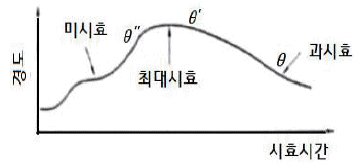
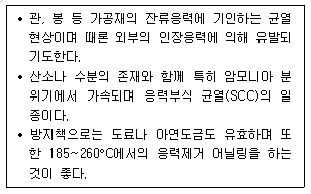
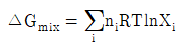
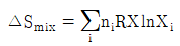
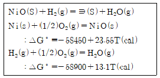
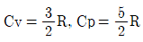
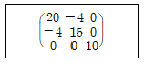
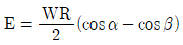

금속재료기사 (2010-05-09 기출문제)
1과목: 금속조직학
1. 회복현상이 일어나면 재질의 특성이 바뀌게 된다. 다음 중 회복현상에 따라 변하는 특성이 아닌 것은?
- 경도
- 내식성
- 전기전도도
- 결정방위
(정답률: 66%)

2. 금속원자가 전자를 잃어서 이온이 되는 과정을 무슨 반응이라 하는가?
- 음극반응
- 전해반응
- 환원반응
- 양극반응
(정답률: 62%)
3. 상의 계면(interface)에 대한 설명 중 틀린 것은?
- 원자간 결합에너지가 클수록 계면에너지가 크다.
- 계면에너지가 작은 면의 성장속도는 느리다.
- 정합 계면을 가진 석출물은 성장하면서 정합성을 상실할 수 있다.
- 두 상의 결정구조, 조성 또는 방위가 다른 경우도 계면에서 두 상 사이에 변형을 일으키지 않는원자 대응이 이루어 지더라도 정합계면을 이룰 수 없다.
(정답률: 89%)
4. 주로 HCP 금속의 소성변형에서 압축 시 발생되는 변형 형태는?
- Kink band
- slip band
- deformationband
- twin band
(정답률: 73%)
5. 다음의 밀러 지수 중 면간거리가 가장 가까운 것은? (단, 격자상수는 1이다.)
- (111)
- (200)
- (130)
- (222)
(정답률: 66%)
6. (101)면에 수직한방향과 [112] 방향 사이의 각(°)은?
- 15
- 30
- 45
- 60
(정답률: 80%)
7. 탄소강 중의 타 원소 영향에 있어 적열취성(hot shortness)의 원인이 되는 것은?
- S
- P
- Mn
- Si
(정답률: 88%)
8. 3성분계 상태도에서 자유도가 0(zero)이 될 때 상의 수는 몇 개 인가? (단, 압력은 일정하다.)
- 1
- 2
- 3
- 4
(정답률: 80%)
9. 다음 중 비정질 합금의 특징이 아닌 것은?
- 균질한 재료이고 결정이방성이 있다.
- 구조적으로는 장거리의 규칙성이 없다.
- 전기저항이 크고 그 온도 의존성은 작다.
- 가공경화를 일으키지 않는다.
(정답률: 75%)
10. 50%의 Ag-Au가 규칙원자를 만들 때 단범위 규칙도는 약 얼마인가? (단, Au는 면심입방격자이므로, 최인접 원자는 총 12개이며, 이 중 6.5개 Ag, 5.5개 Au로 구성되어 있다.)
- 0.08
- -0.08
- 0.80
- -0.80
(정답률: 63%)
11. 결정의 구조에서 축의 길이가 a=b=c이고, 축각이 α=β=γ=90°인결정계는?
- 단사정계
- 삼사정계
- 입방정계
- 정방정계
(정답률: 87%)
12. 다음 중 재료의 내부에서 발생하는 면결함에 해당 되는 것은?
- 혼합전위
- 쇼트키 결함
- 나선전위
- 적층결함
(정답률: 86%)
13. 구리 및 구리합금의 현미경 조직 시험의 부식제로 가장 적합한 것은?
- 나이탈
- 염산용액
- 염화제2철용액
- 수산화나트륨용액
(정답률: 86%)
14. BCC 와 CPH의 원자충전율(atomic packing factor) 은 약 몇 % 인가?
- BCC:34, CPH:68
- BCC:68, CPH:34
- BCC:68, CPH:74
- BCC:74, CPH:68
(정답률: 87%)
15. Fe-C 상태도에서 0.2% 탄소강이 723°C 선상에서의 초석 α와 austenite는 약 몇 %인가? (단, 공석점에서의 탄소 고용한도는 0.8%이며, α의 고용한도는 0.025%이다.)
- α= 77.43, austenite =22.58
- α= 22.58, austenite =77.42
- α= 61.50, austenite =38.50
- α= 38.50, austenite =61.50
(정답률: 75%)
16. 고용체에서 용질 원자가 용매 원자에 고용 되는 정도에 대한 설명으로 틀린 것은?
- 두 원소간의 전기 음성도차가 작으면 작을수록 치환형 고용체보다는 금속간 화합물을 형성하기 쉽다.
- 많은 고용도를 갖기위해서는 두 원자종의 금속이 같은 결정 구조를 가지고 있어야 한다.
- 다른 요소가 동일하다면 금속은 낮은 원자가를 갖는 금속보다는 높은 원자가를 갖는 금속에 더 많이 용해 된다.
- 두 원자간의 반지름 차이가 대략 ±15% 미만 일 경우에는 상당한 양의 용질원자가 치환형 고용체로 수용 될 수 있다.
(정답률: 72%)
17. 고상석출 과정이 아니고 다른 과정에 의해 형성된 제2상이 전위의 장애물, 모상을 가공 강화시키거나, 회복, 재결정과 같은 연화과정을 방해하여 고온에서 재료의 강도를 유지하게 하는 강화법은?
- 고용체강화
- 석출강화
- 분산강화
- 결정립 세화강화
(정답률: 67%)
18. 순철의 동소변태에 대한 설명으로 틀린 것은?
- 결정구조의 변화가 일어난다.
- 자기적 특성의 변화가 일어난다.
- 비중의 변화가 일어난다.
- 성질변화는 일정한 온도에서 급격히 비연속적으로 일어난다.
(정답률: 81%)
19. 체심입방격자의 격자상수가 a일때 (110) 면의 원자밀도는?
- √2×1/a2
- 1/3×1/√a2
- √2a
- √3×1/a2
(정답률: 78%)
20. 탄소강에서 마텐자이트변태의 특징이 아닌 것은?
- 무확산 변태이다.
- 결정구조의 변화는 없으나, 성분의 변화가 생긴다.
- 모상과 일정한 결정학적 방위관계를 가진다.
- 고탄소강에서는 마텐자이트 판이 전단 변태에 의하여 형성된다.
(정답률: 73%)
2과목: 금속재료학
21. 고강도 알루미늄 합금인 두랄루민의 주요 구성 원소는?
- Al-Cu-Mn-Mg
- Al-Ni-Co-Mg
- Al-Ca-Si-Mg
- Al-Zn-Si-Mg
(정답률: 84%)
22. Ti합금의 기본이 되는 합금형이 아닌 것은?
- α형
- β형
- η형
- (α+β)형
(정답률: 85%)
23. 원소 주기율표에 대한 설명으로 옳은 것은?
- 할로겐 원소들은 가장 양성적인 비금속들이다.
- 제0족을 제외하고 표 우측끝으로 갈수록 금속성이 약해진다.
- 제1족의 알칼리금속이 전기화학적으로 가장 음성이다.
- 좌측 아래로 갈수록 금속성이 약하고, 우측 위로 갈수록 비금속성이 약하다.
(정답률: 71%)
24. 진공조 하부의 흡인용관과 배출용관을 용강에 담그고 용강을 흡인, 배출시킴으로서 순환시켜 탈가스와 합금첨가를 하는 방법의 탈가스법은?
- 레이들 탈가스법(LD법)
- 순환 탈가스법(RH법)
- 흡인 탈가스법(DH법)
- 유적 탈가스법(BV)
(정답률: 72%)
25. 다음 중 아연에 대한 설명으로 틀린 것은?
- 조밀육방격자형이다.
- 비중은 약7.1, 용융점은 약 420℃이다.
- 산, 알칼리에 강하고, 해수등에 부식되지 않는다.
- 아연도금용, 전지, 제판용 등의 아연판, 전기방식용 양극재료에 사용된다.
(정답률: 75%)
26. 그림은 Al-4% Cu 합금의 시효시간에 따른 경도 변화를 나타내고 있다. 다음 설명 중 틀린 것은?

- θ″상은 기지와 정합계면을 이루고 있다.
- θ′상은 평형상으로 기지와 부정합계면을 이루고 있다.
- 미시효 조건에서는 전위가 석출물을 자르고 이동할수 있다.
- θ상이 석출한 조건에서는 전위가 석출물을 자르고 지나갈수 있다.
(정답률: 67%)
27. 지르코늄(Zr)의 특성에 대한 설명으로 옳은 것은?
- 비중 6.5, 융점 1852℃이며, 내식성이 우수하다.
- 비중 9.0, 융점 1083℃이며, 전기저항이 작다.
- 비중 2.7, 융점 660℃이며,가공성이 양호하다.
- 비중 7.1, 융점 420℃이며, 경도가 높다.
(정답률: 81%)
28. 금속재료 경도시험 방법 중 압입에 의한 것이 아닌 것은?
- 쇼어경도 시험방법
- 비커스경도 시험방법
- 로크웰경도 시험방법
- 브리넬경도 시험방법
(정답률: 85%)
29. Babbit Metal의 주요 성분으로 옳은 것은?
- Cu-Pb
- Pb-Sn-Sb
- Sn-Sb-Cu
- Zn-Al-Cu
(정답률: 82%)
30. 청동에 대한 설명 중 틀린 것은?
- 주석청동의 α고용체는 결정편석때문에 농도가 달라져서 유심조직을 나타낸다.
- 스프링용 인청동은 7~8% Sn, 0.⑤~0.15% P 정도의 합금이 실용화되고 있다.
- 인청동을 용해 주조할 때 합금 중에 인을 0.⑤-0.15% P 남게 하면 용탕의 유동성이 저하된다.
- 니켈청동에서 θ상이 석출하는 과정에 시효경화 현상이 나타난다.
(정답률: 61%)
31. 다음 중 모넬메탈에 대한 설명으로 틀린 것은?
- KR Monel은 K Monel에 W함량을 높게하여 쾌삭성을 개선한 강이다.
- R Monel은 소량의 S를 첨가하여 쾌삭성을 개선한 강이다.
- K Monel은 용체화처리한 후 뜨임해서 석출경화한 강이다.
- H Monel 은 Si를 첨가하여 석출경화한 것이다.
(정답률: 75%)
32. 주철에서 흑연의 구상화 원소가 아닌 것은?
- Mg
- Ce
- Ca
- Mn
(정답률: 62%)
33. 저융점 합금(fusublealloy)에서 비공정합금은 응고 온도 범위가 넓어서 실용상 고체로서의 강도가 거의 소멸한다. 이러한 온도를 무엇이라 하는가?
- 비액상 온도
- 비공정 온도
- 준액상 온도
- 항복 온도
(정답률: 64%)
34. 금속분말을 소결처리 할 때 성형체에서 일어나는 현상이 아닌 것은?
- 분말입자의 내부 용융
- 내부응력의 변화
- 치수의 변화
- 상의 변화
(정답률: 64%)
35. Fe-C평형 상태도에 대한 설명으로 옳은 것은?
- A2는 시멘타이트의 자기 변태점이며, 약 210°C 이다.
- 공정점은 탄소량이 약 4.3% 이다.
- 순철의 A3변태점은 δ ⇔ γ점이며, 약 1490°C 이다.
- A0는 철의 자기 변태점이며, 약 768°C 이다.
(정답률: 78%)
36. ASTM 에서 결정입도 번호가 7 일 때 100배 배율에서 2.54cm2당 관찰되는 결정립의 수는 몇 개인가?
- 256
- 128
- 64
- 32
(정답률: 83%)
37. 납(Pb)은 상온에서 재결정되어 크리프가 쉽게 발생한다. 다음 중 크리프저항을 향상시키기 위해첨가하는 원소가 아닌 것은?
- Ca
- Ce
- Sb
- As
(정답률: 55%)
38. 급냉법에 의한 비정질 합금의 형성 조건으로 옳은 것은?
- 융점에서 유리 전이점까지의 온도영역을 임계냉각속도 이상으로 빠르게 통과하는 경우
- 융점에서 유리 전이점까지의 온도영역을 임계냉각속도 보다 느리게 통과하는 경우
- 상온에서 방치하여도 결정화되는 안정한 구조를 갖는 경우
- 상온에서 방치하여 결정화되어 불안정한 구조를 갖는 경우
(정답률: 73%)
39. 다음 설명하는 내용은 황동에서 발생되는 어떠한 현상에 관한 것인가?

- 탈아연부식(dezincificaition)
- 자연균열(seasoncracking)
- 고온탈아연(dezincing)
- 수소취성(hydrogenembrittlement)
(정답률: 78%)
40. 다음 중 조직의 경도와 강도가 가장 높은 것 부터 낮은 순서로 나열된 것은?
- Troostite > Austenite > Sorbite > Martensite
- Troostite > Martensite > Sorbite > Austenite
- Martensite > Troostite > Sorbite > Austenite
- Martensite > Sorbite > Troostite > Austenite
(정답률: 74%)
3과목: 야금공학
41. 다음 반응 중 298K에서 표준 자유에너지 변화(ΔG°) 값이 0 이 아닌 것은?
- Zn(s, 1기압) = Zn(s, 3기압)
- SiO2(glass) =SiO2(결정)
- C(흑연) =C(diamond)
- C(흑연) + O2(g) =CO2(g)
(정답률: 68%)
42. 1mole의 반데르발스 기체를 300K에서 등온 가역적으로 10ℓ에서 30ℓ 팽창시켰다. 이 때 주위에 한일(work)은 몇 ℓ·atm인가? (단, 교정압력 상수 a= 5.49 ℓ2·atm·mole-2, 교정부피상수 b= 0.064ℓ·mole-1이다.)
- 26.8
- 28.8
- 33.8
- 35.8
(정답률: 50%)
43. 슬래그는 용융되어 있는 산화물의 성질에 따라 각 기 다른 성질을 나타낸다. 다음 중 염기성 산화물이 아닌 것은?
- CaO
- FeO
- B2O3
- Na2O
(정답률: 67%)
44. 만일 황동이 구리와 아연 원자가 무질서하게 섞여 있는 혼합물이라 할 때 10g의 아연과 20g의구리를 섞어 이상균일 합금을 만들었을 때의 엔트로피증가는 약 얼마인가? (단, Cu 및 Zn의 원자량은 63.5와65.3g/mole이다.)
- 5.80cal/K
- 0.61cal/K
- 0.58cal/K
- 6.10cal/K
(정답률: 55%)
45. 상온 20°C에서 강 1ton을 1600°C까지 용해하는데 필요한 이론상 총 열량은 몇 kcal인가? (단,강의 비열은 0.16kcal/kgf, 용융잠열은 65kcal/kgf이다.)
- 320900
- 317800
- 269300
- 252800
(정답률: 56%)
46. 상태 변화과정에서 비가역도의 척도는?
- 엔트로피
- 내부에너지
- 열팽창계수
- 엔탈피
(정답률: 80%)
47. 1mol의 기체에서 압축 인자(Z=PV/(RT))에 관한 다음 설명 중 틀린 것은? (단, P는 압력, V는 부피, R은 기체상수, T는 절대온도이다.)
- 완전기체의 경우 모든 상태 하에서 1이 된다.
- 압력이 낮고 온도가 높으면 Z는 1에 접근한다.
- 압축하기 쉬운 기체는 저온에서 압력이 증가함에 따라 Z값이 일단 감소하다가 증가한다.
- 실질기체에서는 어떠한 온도에서도 Z값이 1이 될수 없다.
(정답률: 66%)
48. NiO의 표준 생성 자유에너지는 -62650+25.98T(cal)이다. 10-6 기압의 진공으로 NiO를 환원시키려 한다. 환원이 되는 가장 낮은 온도(°C)는?
- 480
- 870
- 13⑤
- 1580
(정답률: 47%)
49. 조연 중의 Bi를 분리제거하는 방법은?
- Harries법
- waelz법
- Parkes법
- Kroll-Betterton법
(정답률: 55%)
50. 등온등압하에서 순수한 성분으로 부터 이상혼합물을 생성할 때 표현식으로 틀린 것은?


- △Hmix=0
- △Vmix=0
(정답률: 63%)
51. 750C°에서 다음 반응의 평형 상수는?

- 4.17×10-3
- 240
- 5.67×10-4
- 1764
(정답률: 44%)
52. 종류가 다른 이상기체들을 혼합할 경우 Gibbs의 자유에너지변화 △Gmix를 표시한 것은? (단, △Hmix는 혼합 엔탈피의 변화, △Smix는 혼합엔트로피의 변화, T는 절대온도이다.)
- △Gmix=0
- △Gmix=△Hmix
- △Gmix=△Hmix-T△Smix
- △Gmix=-T△Smix
(정답률: 60%)
53. 제철공업에서 철을 용해하기 위한 열원으로 사용하며, 산화철을 금속철로 환원하는 환원제의 역할을 하는 인공연료는?
- 갈탄
- 중유
- 무연탄
- 코크스
(정답률: 82%)
54. 황 32kg을 완전 연소시키기 위하여 필요한 산소량은 몇 kg인가?
- 32
- 16
- 12
- 2
(정답률: 80%)
55. 열역학 제1법칙과 제2법칙을 결합하여 얻어진 식으로 옳은 것은?
- △=q-w
- dU=TdS+PdV
- dU=TdS-PdV
- dU=dE+PdV
(정답률: 72%)
56. 슬래그가 접촉하는 선(slag line)에 사용되는 벽돌은?
- 규석 벽돌
- 마그네시아 벽돌
- 크롬 벽돌
- 샤모트 벽돌
(정답률: 50%)
57. 밀폐된 용기 속에 있는 표준상태(0°C,1기압)의 헬륨224ℓ를 100°C로 가열할 때 엔탈피 변화량(ΔH)은 몇J인가? (단, He는 이상기체이고

이며 기체상수 R은 8.3144J/K·mol이다.)- 2078
- 6676
- 20786
- 66763
(정답률: 67%)
58. 용융연화점이 약 1670°C인 내화물은 제게르추 번호로 몇 번인가?
- SK26
- SK30
- SK33
- SK39
(정답률: 69%)
59. 온도와 압력이 일정한 닫힌계에서 A에서 B로의 상태변화가 일어난다. 평형상태는 어느 에너지가 최소값을 가질 때 도달하는가?
- 엔탈피
- 내부에너지
- 헬름홀쯔 자유에너지
- 깁스 자유에너지
(정답률: 78%)
60. Al-Zn 합금은 351.5°C이하에서 A l고용체로부터 공용 간극을 형성한다. 360°c에서 XA=0.6인 고용체 내의 Al성분에 대한 열역학 거동 중 옳은 것은?
- Al의 활동도는 0.6보다 크다.
- 과잉 엔탈피값은 0 이다.
- 과잉자유에너지 값은(-)이다.
- 순수 Al보다 산화를 더 잘한다.
(정답률: 63%)
4과목: 금속가공학
61. 회복 및 재결정 단계에서 기계적 성질과의 관계를 설명한 것 중 틀린 것은?
- 전기저항은 회복의 과정에서 서서히 감소한다.
- 경도는 회복의 과정에서 별로 변하지 않고 재결정의 단계에서 급격히 감소한다.
- 연신율은 회복의 과정에서 별로 변하지 않고 재결정의 단계에서 급격히 증가한다
- 인장강도는 회복의 단계에서 급격히 감소하고, 재결정 단계에서는 급격히 증가한다.
(정답률: 68%)
62. 파괴거동의 입장에서 금속재료의 취성파괴에 해당되는 것은?
- Dimple
- Beach mark
- Cup & Cone
- Cleavage
(정답률: 70%)
63. 전위선을 반경 R의 곡선으로 구부리는데 필요한 전단응력 τ는? (단, G는 강성율, b는 버거스 벡터, E는 탄성계수이다.)
- 2R/Gb
- 2Eb/R
- 2R/E
- Gb/2R
(정답률: 65%)
64. 전기 케이블에 납을 피복하고자 할 때 가장 적합한 가공법은?
- 압연
- 압출
- 단조
- 인발
(정답률: 56%)
65. 나선전위가 한 슬립면에서 활주하다가, 다른 슬립면으로 활주방향을 바꾸어 활주하는 것은?
- 상승운동
- 비보존운동
- 교차슬립
- 평면(planar)슬립
(정답률: 84%)
66. 응력의 상태가 다음과 같을 때 주응력 10을 제외한 나머지 2개의 주응력은 약 얼마인가?

- 2.5±4.72
- 2.5土17.95
- 17.5±4.72
- 17.5土17.95
(정답률: 54%)
67. 다음 중 열간가공의 특징으로 틀린 것은?
- 가공경화가 쉽게 제거된다.
- 총 변형량이 냉간가공에 비해 훨씬 크다.
- 주조상태보다 인성과 연성이 증가한다.
- 주조 조직의 화학적 불균일성이 증가한다.
(정답률: 66%)
68. 압연할 때 롤과 재료와의 접촉면에서 롤의 곡률반경이 증가하는 현상을 무엇이라 하는가?
- 롤 굽힘
- 롤 열팽창
- 롤 평평화
- 롤 크라운
(정답률: 76%)
69. 인장시험에서 재료의 소성변형거동 중 균일신장이 일어나는 곳이 아닌 것은?
- 탄성한계
- 항복점
- 최대하중점
- 파단점
(정답률: 75%)
70. 일반적인 형단조의 특징을 설명한 것 중 옳은 것은?
- 다이(Die)제작 비용이 적게 든다.
- 주물에 비해 강도가 낮고, 표면상태가 나쁘다.
- 소재의 유동에 의하여 강인한 섬유상 조직을 얻을 수 있다.
- 자유 단조보다 단순하고, 정밀한 제품에 적용이 곤란하다.
(정답률: 57%)
71. 재료 내 3개의 최대전단응력 중 어느 것인가 하나의 절대값이 일정값에 이르렀을때 항복이 생긴다는 조건은?
- Von Miss의 항복조건
- Tresca의 항복조건
- Mohr의 항복조건
- Hooke의 항복조건
(정답률: 78%)
72. 다음 중 샤르피(Charpy)충격시험기에서 충격에너지(E)를 구하는식으로 옳은 것은? (단, W는 해머의 무게, R은 해머의 회전축 중심에서 무게중심까지의 거리, α는 해머의 들어 올린 각도, β는 시험편 파단 후 해머가 올라간 각도이다.)
- E=WR(cosβ-cosα)
- E=WR(cosα+cosβ)
- E=2WR(cosβ-cosα)

(정답률: 77%)
73. 어닐링쌍정(Annealing twin)과 변형쌍정(mechanical twin)을 광학현미경하에서 관찰할 때 그 차이점으로써 옳은 것은?
- 어닐링쌍정은 변형쌍정 보다도 폭이 넓고 측면이 곧다.
- 어닐링쌍정은 변형쌍정 보다도 폭이 좁고 측면이 곧지 않다.
- 어닐링쌍정은 변형쌍정 보다도 폭이 넓고 측면이 곧지 않다.
- 어닐링쌍정은 변형쌍정 보다도 폭이 좁고 측면이 곧다.
(정답률: 65%)
74. 취성파괴에 대한 griffith 이론을 설명한 것 중 틀린 것은?
- 취성 재료 속에는 많은 미세균열이 있다.
- 균열이 취성파괴로 발전하면 그 균열 양쪽 면적이 증가한다.
- 이론응집력과 결정의 파괴강도는 차이가 없다.
- 균열이 전파하려면 균열의 전파로 인한 탄성 변형에너지의 감소가 적어도 새로운 균열면을 만드는데 필요한 에너지와 같아야 한다.
(정답률: 63%)
75. 상온에서 큰 소성변형을 받은 재료를 어닐링하면 재결정이 일어나는데 이 때의 구동력으로 옳은 것은?
- 축적에너지
- 표면에너지
- 입계에너지
- 회복현상
(정답률: 76%)
76. 전위와 점결함의 상호작용에 관한 설명 중 옳은 것은?
- 점결함과 전위와의 상호작용 에너지가 음의 값을 가지면 인력이 작용하고, 양의 값을 가지면 척력이 작용한다.
- 용매원자보다 큰 용질원자는 칼날전위의 압축영역으로 끌린다.
- 점결함이 기지보다 탄성적으로 더 연하면 점결함과 전위 사이에는 척력이 작용한다.
- 공공(空孔)은 전위의 인장영역으로 끌려가지만 격자간 원자는 압축영역 에모인다.
(정답률: 58%)
77. 다음 중 가공경화에 대한 설명으로 틀린 것은?
- 고온 일수록 가공경화가 잘일어난다.
- BCC 금속이HCP 금속보다 가공경화가 더 잘 일어난다.
- 가공경화는 전위의 집적 또는 전위의 교차에 의해서 일어난다.
- 고용체가 순수한 금속보다 반드시 가공경화가 더 잘 어난다고는 말할 수 없다.
(정답률: 58%)
78. 석출경화에 대한 Orowan의 이론은 어느 것에 근거한 것인가?
- 전위 loop를 남기는 by-pass과정
- 화학적 경화이론에 의한 계면 에너지의 증가 과정
- 역위상(逆位相)에 의한 기하학적 상호 작용
- 용질원자와의 탄성적 상호 작용
(정답률: 62%)
79. 고온크리프의 변형 기구에 해당되지 않는 것은?
- 전위의 상승
- 결정입계의 미끄럼
- 공공의 확산
- 쌍정의 발생
(정답률: 63%)
80. 전단가공(shearing)할 때 punch와 dies의 간격에 설명 중 틀린 것은?
- 간격이 너무 작으면 고르지 않아 파단면을 갖는다.
- 간격이 너무 크면 둥그스런 파단면(burr)을 갖는다.
- 간격이 너무 크면 파단면은 결함을 가지나 소요 에너지는 감소한다.
- 경하고 강한 재료에서는 간격을 작게한다.
(정답률: 59%)
5과목: 표면공학
81. 무전해니켈액의 구성 성분에 대한 설명으로 틀린 것은?
- 니켈염: 니켈 피막을 부여한다.
- 환원재: 니켈 이온의 P성분의 공급원이다.
- 착화제: 니켈염의 침전을 방지하고 액을 안정화시킨다.
- 안정제: 자기 분해를 촉진 시킨다.
(정답률: 78%)
82. 일반적으로 용융 도금에 사용되지 않는 금속은?
- Zn
- Al
- Sn
- Ni
(정답률: 63%)
83. 다음 중 강을 열처리 할 때 발생된 잔류응력을 제거하는 방법이 아닌 것은?
- 용체화 처리를 한다.
- 저온 풀림을 한다.
- 심냉처리 급열법을 한다.
- 피닝으로 처리를 한다.
(정답률: 50%)
84. 강재를 침탄 담금질한 후 잔류 오스테나이트가 많은 강재를 연마하였더니 균열이 발생했다. 이 연마 균열을 방지하는 방법으로 옳은 것은?
- 침탄 처리 후 확산 풀림처리를 하고 담금질한 다음에 연마한다.
- 침탄 담금질 후 심냉처리를 하고 난 다음, 100~200°C에서 뜨임한 후 연마한다.
- 침탄 후 담금질 시냉각속도를 빠르게 한 다음에 연마한다.
- 침탄 담금질 후 구상화풀림 처리를 한 다음 550~650°C에서 뜨임 한 후연마한다.
(정답률: 56%)
85. Anodizing의 일반적인 주요 공정순서로 옳은 것은?
- 전처리 → anodizing → coloring → sealing
- 전처리 → sealing → anodizing → coloring
- 전처리 → anodizing → sealing → coloring
- 전처리 → coloring → anodizing → sealing
(정답률: 66%)
86. 양극산화 처리에서 생성된 양극산화 피막은 다공질이고 흡습성이 강하므로 그 피막은 여러 가지 결점이 생길 수 있다. 이와 같은 결점을 개선하기 위한 처리법은?
- 스퍼터링(Sputtering)
- 씰링(Sealing)
- 메탈라이징(Metallizing)
- 세러다이징(Sheradizing)
(정답률: 69%)
87. 다음 중 XRD의 구성 장치가 아닌 것은?
- Geioger관
- 반도체 변환기
- X선관
- Hemisphericalanalyzer(CHA)
(정답률: 57%)
88. 뜨임 균열에 대한 방지대책으로 틀린 것은?
- 잔류 응력이 남게 하며,가열을 급속히 한다.
- Ms점, Mf점이 낮은 고합금강은 2번 뜨임을 실시한다.
- 결정입계의 취성을 나타내는 화학성분을 감소시킨다.
- 응력이 집중되는 부분은 열처리상 알맞게 설계한다.
(정답률: 71%)
89. 다음의 건식도금법 중 증착률이 가장 낮은 방법은?
- 스퍼터링
- 화학증착
- 진공증착
- 이온도금
(정답률: 76%)
90. 진공증착, 스퍼터링, 이온도금으로 제조된 박막의 특성을 설명한 것 중 틀린 것은?
- 이온도금으로 제조된 박막의 부착강도가 가장 크다.
- 스퍼터링으로 제조된 박막의 도금속도가 가장 빠르다.
- 진공증착과 이온도금으로 제조된 박막의 도금속도는 거의 비슷하다.
- 진공증착으로 박막을 제조할 때 기판의 온도상승이 가장 작다.
(정답률: 64%)
91. 주사전자현미경은 시료표면 형상 관찰 이외에도 조성차이에 따른 콘트라스트를 영상화 할 수 있어 특정한 상의 분포를 쉽게 알 수 있게해 준다. 이러한 조성에 의한 콘트라스트를 발생시키는 전자는?
- 후방산란전자
- 이차전자
- Auger전자
- 캐소드광전자
(정답률: 74%)
92. 물리적증착(PVD)법을 전기도금이나 용사법 등의 표면피복법과 비교하여 장점을 설명한 것 중 틀린 것은?
- 피막의 조성은 고순도가 된다.
- 피막과 기판의 부착력을 조절 할 수 있다.
- 플라즈마를 사용하므로 공정을 구성하는 장치가 간단하고 비용이 비교적 저렴하다.
- 플라즈마(Plasma)상태의 화학적 활성을 이용하여 화합물의 피막을 생성시킬 경우 소재의 온도를광범위하게 변화시킬 수가 있다.
(정답률: 77%)
93. 다음 중 CVD증착에 대한 설명으로 틀린 것은?
- 비교적 접착력이 좋은 표면이 얻어진다.
- 이론에 가까운 밀도로 증착할 수 있다.
- 미립자의 코팅에는 적용할 수 없다.
- Throwing Power가 좋다.
(정답률: 78%)
94. 합금원소를 많이 함유한 공구강 등에서 풀림시간을 단축시키기 위하여 강을 오스테나이트화 한 후, TTT곡선의 코(nose)온도에 해당되는 600~650°C의 노속에 넣어 5~6시간 동안 유지한 다음 공냉시키는 방법은?
- 완전풀림
- 항온풀림
- 확산풀림
- 구상화풀림
(정답률: 70%)
95. 진공증착에서 박막형성의 단계로 볼 수 없는 것은?
- 증발원반응
- 소스(source)와 기판간 기체의 이동
- 핵생성과 성장에 의한 기체(가스)의 응축
- 촉매입자의 형성과 금속원자의 흡착
(정답률: 48%)
96. 기계구조용 공구강이나 저합금강에 실시되는 고주파경화의 경우 급속가열로 인하여 강 중의 탄소확산이 불충분해지기 쉽다. 이에 대한 대책으로 적합한 것은?
- 잔류 응력을 제거하고 열처리를 행한다.
- 잔류 오스테나이트의 양을 적게해서 열처리를 행한다.
- Cr탄화물을 만든 다음 열처리를 행한다.
- 사전에 소르바이트 조직을 만들어 열처리를 행한다.
(정답률: 49%)
97. 25cmx25cm 크기의 판을 양면 도금하는데 35A의 전류가 흘렀다면 전류밀도는 얼마인가?
- 1.5A/dm2
- 2.8A/dm2
- 4.3A/dm2
- 4.5A/dm2
(정답률: 57%)
98. 알루미늄의 양극산화법에서 양극의 물건걸이의 재료로 가장 적당한 것은?
- 구리선
- 황동선
- 알루미늄선
- 강철선
(정답률: 67%)
99. 공업적으로 도금이 가능한 플라스틱인 ABS는 공중 합체로 에칭에 의하여 특정성분을 용해시켜 갈고리 효과를 얻게 된다. ABS수지에서 에칭으로 용해되어 갈고리 효과를 주는 것은?
- 아크릴로니트릴(Acrylonitrile)
- 부타디엔(Butadiene)
- 스틸렌(Styrene)
- ABS소재 표면에 전체적으로 용해
(정답률: 61%)
100. 오스테나이트계스테인리스강을용접후950°C에서후열처리를할필요가있는경우에해당되는것은?
- 치수 및 형상의 변화가 필요할때
- 담금질에 의한 경화가 필요할때
- 내식성의 향상이 필요할때
- 탄화물의 석출이 필요할때
(정답률: 70%)